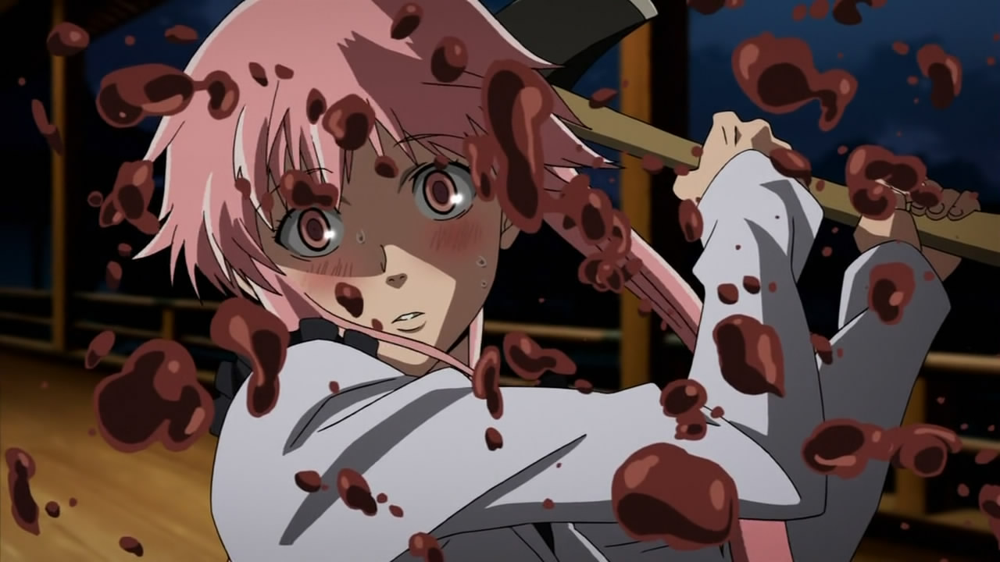

Tokyo Ghoul

A mi personalmente me encantaron los capítulos finales de la primera temporada del anime y la segunda temporada entera. En los capítulos finales de la primera temporada cuando fue secuestrado por Aogiri se muestra como Kaneki tiene un dilema entre sus ideales ( ser herido antes que herir ) y la forma de pensar de Rize (que "sigue viva" en el interior de Kaneki y le dice todo lo contrario) Esto en mi dejo una gran marca en mi forma de pensar porque ver como Kaneki se enfrenta a la situación en la que se encuentra el trastorno, locura y sufrimiento que esto llevo consigo y aun asi sigue queriendo proteger a los suyo.
Miarai Nikki
Mi opinión sobre este anime es que es el mejor que he visto porque: 1. Lo GORE y las peleas por ganar, 2. El "amor" de la "pareja", 3. Por su historia y el trasfondo, 4. Por su fantasía...
Noragami
La hitoria se centra en el dios menor de la guerra yato quien tiene como sueño tener una gran cantidad de seguidores que lo adoren y crean en el .pero lamentablemente este sueño se ve muy lejos por que no tiene ni un santuario.un dia tropieza con una humana llamada hiyori iki una estudiante de instituto .tras verse involucrada en un accidente .se convierte en una medio-fantasma y decide quedarse al lado de yato mientras el busca la manera de ayudarla .con el tiempo yato tiene un shinki(tesoro sagrado) llamado yukine que lo ayudara en diferentes situaciones en las que se involucran En lo personal me gusta mucho este anime por que tiene un buen argumento se desarrolla bien y una buena animacion (ademas que yato es muyy lindo )

Free!
Me causó bastante gracia que a cada uno de los personajes les dieran un estilo para que pudieran completar el relevo. Además de que el diseño físicamente de estos es bastante apegado a la realidad, especialmente los de Nagisa y Nitori. En concluion es un anime de deporte, comedia y drama, lo recomiendo bastante por la trama y los openings y endings pegajosos :)